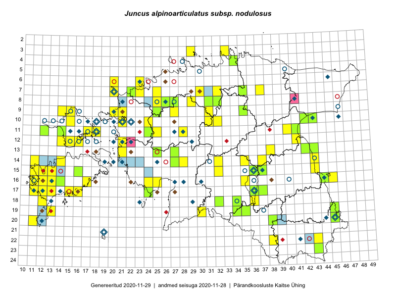

Juncus alpinoarticulatus subsp. nodulosus — sõlmluga
Juncaceae :: Juncus alpinoarticulatus subsp. nodulosus (Wahlenb.) Hämet-Ahti (198); Juncus nodulosus Wahlenb. (72)

Kaart põhineb 399 kirjel:
vaatlusi 161
herbaareksemplare 109
PKÜ kirjeid1 11
ELFi kirjeid2 118
Taime kaasaegsed ja ajaloolised leiukohad asuvad 173 ruudus.
Tingmärgid ja leidudega ruutude arvud periooditi uues (u) ja 2005 andmestikus (v)
| █ | vahemik | u3 | v4 |
|---|---|---|---|
| █ | 2006–2020 | 119 | – |
| ◆/◇ | 1971–2005 | 63 | 58 |
| ○ | 1921–1970 | 36 | 25 |
| + | kuni 1920 | 0 | 0 |
| × | hävinud | – | 0 |
| ? | kaheldav | – | 0 |
| Ruut | Leidja(d) | Leiuaeg | Kirje |
|---|---|---|---|
| 16-17 | Mari Reitalu, Sirje Azarov | 2020-08-08–2020-08-29 | ruut/ala: Juncus alpinoarticulatus subsp. nodulosus (Wahlenb.) Hämet-Ahti |
| 10-43 | Helle Mäemets, Kadi Palmik-Das | 2020-08-03 | punkt: Juncus nodulosus Wahlenb. |
| 16-44 | Helle Mäemets, Kadi Palmik-Das | 2020-07-27 | punkt: Juncus nodulosus Wahlenb. |
| 08-26 | Eerik Leibak | 2020-07-15 | ELF: 2745 |
| 07-31 | Eerik Leibak | 2020-07-14 | ELF: 308 |
| 14-22 | Silvia Pihu | 2020-07-09 | ELF: 15962 |
| 10-15 | Helle Mäemets, Kaire Torn | 2020-07-07 | punkt: Juncus nodulosus Wahlenb. |
| 17-15 | Mari Reitalu, Sirje Azarov | 2020-07-02 | ruut/ala: Juncus alpinoarticulatus subsp. nodulosus (Wahlenb.) Hämet-Ahti |
| 17-16 | Peedu Saar, Toomas Kukk | 2019-09-27 | ruut/ala: Juncus alpinoarticulatus subsp. nodulosus (Wahlenb.) Hämet-Ahti |
| 09-20 | Ott Luuk | 2019-09-18 | ruut/ala: Juncus alpinoarticulatus subsp. nodulosus (Wahlenb.) Hämet-Ahti |
| 15-13 | Mari Reitalu, Sirje Azarov | 2019-08-31 | ruut/ala: Juncus alpinoarticulatus subsp. nodulosus (Wahlenb.) Hämet-Ahti |
| 17-24 | Toomas Kukk, Peedu Saar | 2019-08-29 | TAA0148572: Juncus alpinoarticulatus subsp. nodulosus (Wahlenb.) Hämet-Ahti |
| 17-24 | Toomas Kukk, Peedu Saar | 2019-08-29 | TAA0148573: Juncus alpinoarticulatus subsp. nodulosus (Wahlenb.) Hämet-Ahti |
| 15-32 | Mari Reitalu, Thea Kull, Martin Tikk | 2019-08-29 | ruut/ala: Juncus alpinoarticulatus subsp. nodulosus (Wahlenb.) Hämet-Ahti |
| 17-13 | Mari Reitalu, Sirje Azarov | 2019-08-19 | ELF: 24784 |
| 16-13 | Mari Reitalu, Sirje Azarov | 2019-08-15 | ruut/ala: Juncus alpinoarticulatus subsp. nodulosus (Wahlenb.) Hämet-Ahti |
| 16-13 | Mari Reitalu, Sirje Azarov | 2019-08-15 | ELF: 12 |
| 16-13 | Mari Reitalu, Sirje Azarov | 2019-08-15 | ELF: 13 |
| 16-13 | Mari Reitalu, Sirje Azarov | 2019-08-15 | ELF: 14 |
| 16-12 | Mari Reitalu, Sirje Azarov | 2019-08-09 | ELF: 52 |
| 04-34 | Toomas Kukk, Rein Kalamees | 2019-08-06 | TAA0148720: Juncus alpinoarticulatus subsp. nodulosus (Wahlenb.) Hämet-Ahti |
| 10-32 | Ott Luuk | 2019-07-31 | ruut/ala: Juncus alpinoarticulatus subsp. nodulosus (Wahlenb.) Hämet-Ahti |
| 18-36 | Ott Luuk, Peedu Saar | 2019-07-16 | ruut/ala: Juncus alpinoarticulatus subsp. nodulosus (Wahlenb.) Hämet-Ahti |
| 17-12 | Mari Reitalu | 2019-07-14 | ELF: 24782 |
| 08-27 | Eerik Leibak | 2019-07-12 | TAA0148192: Juncus alpinoarticulatus subsp. nodulosus (Wahlenb.) Hämet-Ahti |
| 08-27 | Eerik Leibak | 2019-07-12 | ELF: 860 |
| 15-12 | Mari Reitalu, Sirje Azarov | 2019-07-10 | punkt: Juncus alpinoarticulatus subsp. nodulosus (Wahlenb.) Hämet-Ahti |
| 15-12 | Mari Reitalu | 2019-06-27 | ELF: 108 |
| 08-21 | Tõnu Ploompuu, Priit Kukk | 2018-08-21 | ELF: 6083 |
| 06-23 | Ott Luuk, Meeli Mesipuu, Jaak-Albert Metsoja, Mari Metsoja, Peedu Saar | 2018-07-04–2018-07-06 | ruut/ala: Juncus alpinoarticulatus subsp. nodulosus (Wahlenb.) Hämet-Ahti |
| 07-37 | Toomas Kukk, Peedu Saar | 2017-09-28 | ruut/ala: Juncus alpinoarticulatus subsp. nodulosus (Wahlenb.) Hämet-Ahti |
| 10-15 | Peedu Saar, Ott Luuk | 2017-09-14 | punkt: Juncus alpinoarticulatus subsp. nodulosus (Wahlenb.) Hämet-Ahti |
| 10-15 | Ott Luuk, Peedu Saar | 2017-09-14 | ruut/ala: Juncus alpinoarticulatus subsp. nodulosus (Wahlenb.) Hämet-Ahti |
| 12-14 | Toomas Kukk, Indrek Tammekänd | 2017-09-13 | ruut/ala: Juncus alpinoarticulatus subsp. nodulosus (Wahlenb.) Hämet-Ahti |
| 11-17 | Toomas Kukk, Indrek Tammekänd | 2017-09-11 | ruut/ala: Juncus alpinoarticulatus subsp. nodulosus (Wahlenb.) Hämet-Ahti |
| 10-21 | Peedu Saar, Toomas Kukk | 2017-09-07 | punkt: Juncus alpinoarticulatus subsp. nodulosus (Wahlenb.) Hämet-Ahti |
| 10-21 | Peedu Saar, Toomas Kukk | 2017-09-07 | ruut/ala: Juncus alpinoarticulatus subsp. nodulosus (Wahlenb.) Hämet-Ahti |
| 15-36 | Helle Mäemets | 2017-08-29 | ruut/ala: Juncus nodulosus Wahlenb. |
| 15-36 | Helle Mäemets | 2017-08-29 | TAA0143038: Juncus nodulosus Wahlenb. |
| 14-35 | Meeli Mesipuu, Ott Luuk, Helen Toom | 2017-08-28 | ruut/ala: Juncus alpinoarticulatus subsp. nodulosus (Wahlenb.) Hämet-Ahti |
| 12-41 | Ott Luuk, Peedu Saar | 2017-08-23 | ruut/ala: Juncus alpinoarticulatus subsp. nodulosus (Wahlenb.) Hämet-Ahti |
| 14-43 | Peedu Saar, Ott Luuk | 2017-08-21 | ruut/ala: Juncus alpinoarticulatus subsp. nodulosus (Wahlenb.) Hämet-Ahti |
| 10-15 | Helle Mäemets, Maila Moor | 2017-08-17 | punkt: Juncus nodulosus Wahlenb. |
| 09-15 | Helle Mäemets, Maila Moor | 2017-08-17 | punkt: Juncus nodulosus Wahlenb. |
| 14-37 | Peedu Saar | 2017-08-14 | ruut/ala: Juncus alpinoarticulatus subsp. nodulosus (Wahlenb.) Hämet-Ahti |
| 14-28 | Ott Luuk, Indrek Tammekänd | 2017-08-11 | ruut/ala: Juncus alpinoarticulatus subsp. nodulosus (Wahlenb.) Hämet-Ahti |
| 11-25 | Toomas Kukk, Eerik Leibak | 2017-08-10 | ruut/ala: Juncus alpinoarticulatus subsp. nodulosus (Wahlenb.) Hämet-Ahti |
| 11-24 | Toomas Kukk, Eerik Leibak | 2017-08-10 | TAA0141651: Juncus alpinoarticulatus subsp. nodulosus (Wahlenb.) Hämet-Ahti |
| 08-29 | Ott Luuk, Thea Kull | 2017-08-09 | ruut/ala: Juncus alpinoarticulatus subsp. nodulosus (Wahlenb.) Hämet-Ahti |
| 11-28 | Ott Luuk, Thea Kull | 2017-08-08 | ruut/ala: Juncus alpinoarticulatus subsp. nodulosus (Wahlenb.) Hämet-Ahti |
| 15-43 | Helle Mäemets, Kadi Palmik-Das | 2017-07-26 | punkt: Juncus nodulosus Wahlenb. |
| 13-43 | Peedu Saar | 2017-07-24 | TAA0141262: Juncus alpinoarticulatus subsp. nodulosus (Wahlenb.) Hämet-Ahti |
| 11-41 | Helle Mäemets, Kadi Palmik-Das | 2017-07-24 | punkt: Juncus nodulosus Wahlenb. |
| 10-42 | Helle Mäemets | 2017-07-24 | TAA2004483: Juncus alpinoarticulatus subsp. nodulosus (Wahlenb.) Hämet-Ahti |
| 08-26 | Helle Mäemets, Kadi Palmik | 2017-07-16 | ruut/ala: Juncus alpinoarticulatus subsp. nodulosus (Wahlenb.) Hämet-Ahti |
| 08-26 | Helle Mäemets | 2017-07-16 | TAA2004482: Juncus alpinoarticulatus subsp. nodulosus (Wahlenb.) Hämet-Ahti |
| 09-25 | Helle Mäemets | 2017-07-16 | TAA2004609: Juncus alpinoarticulatus subsp. nodulosus (Wahlenb.) Hämet-Ahti |
| 07-22 | Helle Mäemets, Kadi Palmik | 2017-07-15 | ruut/ala: Juncus alpinoarticulatus subsp. nodulosus (Wahlenb.) Hämet-Ahti |
| 07-22 | Helle Mäemets | 2017-07-15 | TAA2004428: Juncus alpinoarticulatus subsp. nodulosus (Wahlenb.) Hämet-Ahti |
| 18-32 | Kadi Palmik-Das | 2017-07-03 | TAA2004434: Juncus alpinoarticulatus subsp. nodulosus (Wahlenb.) Hämet-Ahti |
| 18-32 | Helle Mäemets, Kadi Palmik-Das | 2017-07-03 | punkt: Juncus nodulosus Wahlenb. |
| 18-32 | Helle Mäemets, Kadi Palmik | 2017-07-03 | ruut/ala: Juncus alpinoarticulatus subsp. nodulosus (Wahlenb.) Hämet-Ahti |
| 17-37 | Helle Mäemets | 2017-07-01 | TAA2004430: Juncus alpinoarticulatus subsp. nodulosus (Wahlenb.) Hämet-Ahti |
| 17-13 | Ott Luuk, Peedu Saar | 2016-10-08 | ruut/ala: Juncus alpinoarticulatus subsp. nodulosus (Wahlenb.) Hämet-Ahti |
| 14-11 | Peedu Saar, Ott Luuk | 2016-10-07 | ruut/ala: Juncus alpinoarticulatus subsp. nodulosus (Wahlenb.) Hämet-Ahti |
| 19-30 | Peedu Saar, Ott Luuk | 2016-10-06 | ruut/ala: Juncus alpinoarticulatus subsp. nodulosus (Wahlenb.) Hämet-Ahti |
| 07-32 | Peedu Saar, Ott Luuk | 2016-09-28 | ruut/ala: Juncus alpinoarticulatus subsp. nodulosus (Wahlenb.) Hämet-Ahti |
| 08-32 | Ott Luuk, Peedu Saar | 2016-09-28 | ruut/ala: Juncus alpinoarticulatus subsp. nodulosus (Wahlenb.) Hämet-Ahti |
| 16-14 | Meeli Mesipuu | 2016-09-16 | TAA0144212: Juncus alpinoarticulatus subsp. nodulosus (Wahlenb.) Hämet-Ahti |
| 07-30 | Toomas Kukk, Peedu Saar | 2016-09-09 | ruut/ala: Juncus alpinoarticulatus subsp. nodulosus (Wahlenb.) Hämet-Ahti |
| 09-31 | Peedu Saar, Ott Luuk | 2016-09-07 | ruut/ala: Juncus alpinoarticulatus subsp. nodulosus (Wahlenb.) Hämet-Ahti |
| 15-16 | Meeli Mesipuu, Maret Gerz | 2016-08-13 | ruut/ala: Juncus alpinoarticulatus subsp. nodulosus (Wahlenb.) Hämet-Ahti |
| 15-16 | Meeli Mesipuu, Maret Gerz | 2016-08-13 | punkt: Juncus alpinoarticulatus subsp. nodulosus (Wahlenb.) Hämet-Ahti |
| 15-16 | Meeli Mesipuu | 2016-08-13 | TAA0137435: Juncus alpinoarticulatus subsp. nodulosus (Wahlenb.) Hämet-Ahti |
| 17-16 | Toomas Kukk, Meeli Mesipuu | 2016-08-12 | ruut/ala: Juncus alpinoarticulatus subsp. nodulosus (Wahlenb.) Hämet-Ahti |
| 11-12 | Thea Kull, Peedu Saar | 2016-08-10 | TAA0139358: Juncus alpinoarticulatus subsp. nodulosus (Wahlenb.) Hämet-Ahti |
| 11-14 | Peedu Saar, Thea Kull | 2016-08-09 | TAA0134781: Juncus alpinoarticulatus subsp. nodulosus (Wahlenb.) Hämet-Ahti |
| 11-14 | Peedu Saar, Thea Kull | 2016-08-09 | TAA0134782: Juncus alpinoarticulatus subsp. nodulosus (Wahlenb.) Hämet-Ahti |
| 11-18 | Sander Laherand, Peedu Saar, Nele Jõessar | 2016-08-08 | ruut/ala: Juncus alpinoarticulatus subsp. nodulosus (Wahlenb.) Hämet-Ahti |
| 20-45 | Helle Mäemets | 2016-08-05 | TAA2004346: Juncus alpinoarticulatus subsp. nodulosus (Wahlenb.) Hämet-Ahti |
| 22-43 | Peedu Saar, Thea Kull | 2016-08-04 | ruut/ala: Juncus alpinoarticulatus subsp. nodulosus (Wahlenb.) Hämet-Ahti |
| 20-45 | Helle Mäemets, Kadi Palmik-Das | 2016-08-04 | punkt: Juncus nodulosus Wahlenb. |
| 10-43 | Helle Mäemets | 2016-08-01 | TAA2004352: Juncus alpinoarticulatus subsp. nodulosus (Wahlenb.) Hämet-Ahti |
| 19-13 | Mari Reitalu, Sirje Azarov | 2016-07-31 | ruut/ala: Juncus alpinoarticulatus subsp. nodulosus (Wahlenb.) Hämet-Ahti |
| 03-33 | Peedu Saar, Timo Luhamäe | 2016-07-26 | ruut/ala: Juncus alpinoarticulatus subsp. nodulosus (Wahlenb.) Hämet-Ahti |
| 14-14 | Mari Reitalu, Sirje Azarov | 2016-07-26 | ruut/ala: Juncus alpinoarticulatus subsp. nodulosus (Wahlenb.) Hämet-Ahti |
| 10-31 | Toivo Sepp, Peedu Saar | 2016-07-22 | ruut/ala: Juncus alpinoarticulatus subsp. nodulosus (Wahlenb.) Hämet-Ahti |
| 08-31 | Peedu Saar, Toivo Sepp | 2016-07-18 | TAA0134783: Juncus alpinoarticulatus subsp. nodulosus (Wahlenb.) Hämet-Ahti |
| 14-27 | Peedu Saar, Timo Luhamäe | 2016-07-08 | TAA0134784: Juncus alpinoarticulatus subsp. nodulosus (Wahlenb.) Hämet-Ahti |
| 13-27 | Peedu Saar, Timo Luhamäe | 2016-07-08 | TAA0134785: Juncus alpinoarticulatus subsp. nodulosus (Wahlenb.) Hämet-Ahti |
| 07-23 | Aat Sarv, Helle Mäemets, Mari Reitalu, Sirje Azarov | 2016-07-08 | ruut/ala: Juncus alpinoarticulatus subsp. nodulosus (Wahlenb.) Hämet-Ahti |
| 09-21 | Jaak-Albert Metsoja, Mari Metsoja | 2016-07-07 | ruut/ala: Juncus alpinoarticulatus subsp. nodulosus (Wahlenb.) Hämet-Ahti |
| 09-27 | Rein Kalamees, Liina Oja | 2016-07-06 | ruut/ala: Juncus alpinoarticulatus subsp. nodulosus (Wahlenb.) Hämet-Ahti |
| 10-24 | Helle Mäemets, Tiina Elvisto | 2016-07-06 | ruut/ala: Juncus alpinoarticulatus subsp. nodulosus (Wahlenb.) Hämet-Ahti |
| 13-25 | Peedu Saar, Timo Luhamäe, Johannes Kõdar | 2016-07-05 | TAA0134789: Juncus alpinoarticulatus subsp. nodulosus (Wahlenb.) Hämet-Ahti |
| 08-25 | Helle Mäemets, Tiina Elvisto | 2016-07-05 | ruut/ala: Juncus alpinoarticulatus subsp. nodulosus (Wahlenb.) Hämet-Ahti |
| 07-25 | Helle Mäemets, Tiina Elvisto | 2016-07-05 | ruut/ala: Juncus alpinoarticulatus subsp. nodulosus (Wahlenb.) Hämet-Ahti |
| 16-25 | Thea Kull, Helle Mäemets | 2016-07-04 | ruut/ala: Juncus alpinoarticulatus subsp. nodulosus (Wahlenb.) Hämet-Ahti |
| 16-24 | Helle Mäemets, Thea Kull | 2016-07-04 | ruut/ala: Juncus alpinoarticulatus subsp. nodulosus (Wahlenb.) Hämet-Ahti |
| 07-20 | Jaak-Albert Metsoja, Mari Metsoja | 2016-07-01 | ruut/ala: Juncus alpinoarticulatus subsp. nodulosus (Wahlenb.) Hämet-Ahti |
| 06-20 | Jaak-Albert Metsoja, Mari Metsoja | 2016-06-30 | ruut/ala: Juncus alpinoarticulatus subsp. nodulosus (Wahlenb.) Hämet-Ahti |
| 07-35 | Elle Rajandu, Karin Kikas | 2016-06-29 | TAA0141515: Juncus alpinoarticulatus subsp. nodulosus (Wahlenb.) Hämet-Ahti |
| 11-40 | Eeva-Maria Jeletsky, Tarmo Niitla | 2016-06-05 | ruut/ala: Juncus alpinoarticulatus subsp. nodulosus (Wahlenb.) Hämet-Ahti |
| 17-12 | Mari Reitalu | 2015-09-10 | ruut/ala: Juncus alpinoarticulatus subsp. nodulosus (Wahlenb.) Hämet-Ahti |
| 16-13 | Mari Reitalu | 2015-08-29 | ruut/ala: Juncus alpinoarticulatus subsp. nodulosus (Wahlenb.) Hämet-Ahti |
| 12-21 | Tiit Hallikma, Toomas Kukk | 2015-08-28 | PKÜ: 18615 |
| 13-21 | Thea Kull, Eerik Leibak | 2015-08-28 | PKÜ: 19548 |
| 12-21 | Tiit Hallikma, Toomas Kukk | 2015-08-27 | ruut/ala: Juncus alpinoarticulatus subsp. nodulosus (Wahlenb.) Hämet-Ahti |
| 17-12 | Mari Reitalu | 2015-08-27 | ruut/ala: Juncus alpinoarticulatus subsp. nodulosus (Wahlenb.) Hämet-Ahti |
| 12-22 | Toomas Kukk, Tiit Hallikma | 2015-08-26 | PKÜ: 18600 |
| 16-12 | Mari Reitalu | 2015-08-23 | ruut/ala: Juncus alpinoarticulatus subsp. nodulosus (Wahlenb.) Hämet-Ahti |
| 11-41 | Peedu Saar | 2015-08-22 | TAA0116342: Juncus alpinoarticulatus subsp. nodulosus (Wahlenb.) Hämet-Ahti |
| 19-45 | Meeli Mesipuu, Thea Kull | 2015-08-19 | TAA0137453: Juncus alpinoarticulatus subsp. nodulosus (Wahlenb.) Hämet-Ahti |
| 17-13 | Mari Reitalu, Oliver Parrest | 2015-08-12 | ruut/ala: Juncus alpinoarticulatus subsp. nodulosus (Wahlenb.) Hämet-Ahti |
| 17-12 | Mari Reitalu | 2015-08-11–2015-08-25 | ruut/ala: Juncus alpinoarticulatus subsp. nodulosus (Wahlenb.) Hämet-Ahti |
| 09-14 | Toomas Kukk, Eerik Leibak | 2015-08-10 | ruut/ala: Juncus alpinoarticulatus subsp. nodulosus (Wahlenb.) Hämet-Ahti |
| 16-11 | Triin Reitalu, Mari Reitalu | 2015-08-09–2015-08-10 | ruut/ala: Juncus alpinoarticulatus subsp. nodulosus (Wahlenb.) Hämet-Ahti |
| 16-11 | Mari Reitalu, Triin Reitalu | 2015-08-09–2015-08-10 | ruut/ala: Juncus alpinoarticulatus subsp. nodulosus (Wahlenb.) Hämet-Ahti |
| 17-11 | Mari Reitalu, Triin Reitalu | 2015-08-05 | ruut/ala: Juncus alpinoarticulatus subsp. nodulosus (Wahlenb.) Hämet-Ahti |
| 18-12 | Mari Reitalu, Sirje Azarov, Oliver Parrest | 2015-08-02 | ruut/ala: Juncus alpinoarticulatus subsp. nodulosus (Wahlenb.) Hämet-Ahti |
| 16-45 | Toomas Kukk, Eerik Leibak | 2015-07-29 | ruut/ala: Juncus alpinoarticulatus subsp. nodulosus (Wahlenb.) Hämet-Ahti |
| 16-45 | Toomas Kukk, Eerik Leibak | 2015-07-29 | punkt: Juncus alpinoarticulatus subsp. nodulosus (Wahlenb.) Hämet-Ahti |
| 10-42 | Helle Mäemets, Kadi Palmik-Das | 2015-07-28 | punkt: Juncus nodulosus Wahlenb. |
| 10-43 | Helle Mäemets, Kadi Palmik-Das | 2015-07-28 | punkt: Juncus nodulosus Wahlenb. |
| 11-41 | Helle Mäemets | 2015-07-28 | TAA2004274.A: Juncus alpinoarticulatus subsp. nodulosus (Wahlenb.) Hämet-Ahti |
| 16-13 | Mari Reitalu, Oliver Parrest | 2015-07-27 | ruut/ala: Juncus alpinoarticulatus subsp. nodulosus (Wahlenb.) Hämet-Ahti |
| 20-45 | Katrit Karus, Tõnu Feldmann | 2015-07-27 | ruut/ala: Juncus alpinoarticulatus subsp. nodulosus (Wahlenb.) Hämet-Ahti |
| 18-34 | Maria Abakumova | 2015-07-24 | TAA0119508: Juncus alpinoarticulatus subsp. nodulosus (Wahlenb.) Hämet-Ahti |
| 09-35 | Kadi Palmik, Helle Mäemets | 2015-07-21 | ruut/ala: Juncus alpinoarticulatus subsp. nodulosus (Wahlenb.) Hämet-Ahti |
| 09-35 | Helle Mäemets | 2015-07-21 | TAA2004563: Juncus alpinoarticulatus subsp. nodulosus (Wahlenb.) Hämet-Ahti |
| 16-13 | Sirje Azarov, Aira Alasi | 2015-07-20 | ruut/ala: Juncus alpinoarticulatus subsp. nodulosus (Wahlenb.) Hämet-Ahti |
| 16-12 | Mari Reitalu, Triin Reitalu | 2015-07-20 | ruut/ala: Juncus alpinoarticulatus subsp. nodulosus (Wahlenb.) Hämet-Ahti |
| 03-29 | Kadi-Liis Kesler, Maria Ksenofontov | 2015-07-20 | ruut/ala: Juncus alpinoarticulatus subsp. nodulosus (Wahlenb.) Hämet-Ahti |
| 20-11 | Mari Reitalu, Triin Reitalu | 2015-07-19 | ruut/ala: Juncus alpinoarticulatus subsp. nodulosus (Wahlenb.) Hämet-Ahti |
| 22-38 | Eeva-Maria Jeletsky, Tarmo Niitla | 2015-07-17 | ruut/ala: Juncus alpinoarticulatus subsp. nodulosus (Wahlenb.) Hämet-Ahti |
| 15-11 | Mari Reitalu, Oliver Parrest | 2015-07-16 | ruut/ala: Juncus alpinoarticulatus subsp. nodulosus (Wahlenb.) Hämet-Ahti |
| 09-27 | Aat Sarv | 2015-07-16 | ruut/ala: Juncus alpinoarticulatus subsp. nodulosus (Wahlenb.) Hämet-Ahti |
| 15-37 | Helle Mäemets | 2015-07-07 | TAA2004572: Juncus alpinoarticulatus subsp. nodulosus (Wahlenb.) Hämet-Ahti |
| 15-36 | Helle Mäemets, Mare Leis | 2015-07-06 | ruut/ala: Juncus alpinoarticulatus subsp. nodulosus (Wahlenb.) Hämet-Ahti |
| 15-37 | Helle Mäemets, Mare Leis, Jaak-Albert Metsoja | 2015-07-05 | ruut/ala: Juncus alpinoarticulatus subsp. nodulosus (Wahlenb.) Hämet-Ahti |
| 13-38 | Ülle Jõgar, Illi Tarmu, Kai Rünk | 2015-07-03 | ruut/ala: Juncus alpinoarticulatus subsp. nodulosus (Wahlenb.) Hämet-Ahti |
| 16-35 | Aat Sarv | 2015-07-01–2015-07-08 | ruut/ala: Juncus alpinoarticulatus subsp. nodulosus (Wahlenb.) Hämet-Ahti |
| 19-13 | Oliver Parrest | 2015-07-01 | ruut/ala: Juncus alpinoarticulatus subsp. nodulosus (Wahlenb.) Hämet-Ahti |
| 14-32 | Maria Abakumova, Helle Mäemets | 2015-07-01 | ruut/ala: Juncus alpinoarticulatus subsp. nodulosus (Wahlenb.) Hämet-Ahti |
| 11-12 | Eeva-Maria Jeletsky, Tarmo Niitla | 2015-06-27 | ruut/ala: Juncus alpinoarticulatus subsp. nodulosus (Wahlenb.) Hämet-Ahti |
| 09-20 | Kadi-Liis Kesler | 2015-06-25–2015-10-11 | ruut/ala: Juncus alpinoarticulatus subsp. nodulosus (Wahlenb.) Hämet-Ahti |
| 17-36 | Helle Mäemets, Mare Leis, Malle Timm | 2015-06-25 | ruut/ala: Juncus alpinoarticulatus subsp. nodulosus (Wahlenb.) Hämet-Ahti |
| 12-14 | Eeva-Maria Jeletsky, Tarmo Niitla | 2015-06-25 | ruut/ala: Juncus alpinoarticulatus subsp. nodulosus (Wahlenb.) Hämet-Ahti |
| 12-15 | Eeva-Maria Jeletsky, Tarmo Niitla | 2015-06-25 | ruut/ala: Juncus alpinoarticulatus subsp. nodulosus (Wahlenb.) Hämet-Ahti |
| 12-16 | Eeva-Maria Jeletsky, Tarmo Niitla | 2015-06-21 | ruut/ala: Juncus alpinoarticulatus subsp. nodulosus (Wahlenb.) Hämet-Ahti |
| 11-17 | Eeva-Maria Jeletsky, Tarmo Niitla | 2015-06-20 | ruut/ala: Juncus alpinoarticulatus subsp. nodulosus (Wahlenb.) Hämet-Ahti |
| 13-21 | Aat Sarv | 2014-09-29 | punkt: Juncus nodulosus Wahlenb. |
| 20-38 | Helle Mäemets | 2014-09-07 | TAA2004187: Juncus alpinoarticulatus subsp. nodulosus (Wahlenb.) Hämet-Ahti |
| 17-12 | Mari Reitalu | 2014-08-31 | ruut/ala: Juncus alpinoarticulatus subsp. nodulosus (Wahlenb.) Hämet-Ahti |
| 17-12 | Mari Reitalu | 2012-09-02 | ELF: 23028 |
| 16-13 | Mari Reitalu | 2012-08-25 | ELF: 23992 |
| 15-14 | Mari Reitalu | 2012-08-25 | ELF: 23993 |
| 14-13 | Mari Reitalu | 2012-08-22 | ELF: 1299 |
| 14-13 | Mari Reitalu | 2012-08-22 | ELF: 23980 |
| 14-13 | Mari Reitalu | 2012-08-22 | ELF: 23981 |
| 14-11 | Mari Reitalu | 2012-08-18 | ELF: 30 |
| 16-12 | Mari Reitalu | 2012-08-05 | ELF: 1316 |
| 17-12 | Mari Reitalu | 2012-08-01 | ELF: 1312 |
| 19-35 | Helle Mäemets | 2012-07-25 | TAA2004184: Juncus alpinoarticulatus subsp. nodulosus (Wahlenb.) Hämet-Ahti |
| 08-32 | Helle Mäemets | 2011-08-31 | TAA2004626: Juncus alpinoarticulatus subsp. nodulosus (Wahlenb.) Hämet-Ahti |
| 10-43 | Helle Mäemets | 2011-08-01 | TAA2004288: Juncus alpinoarticulatus subsp. nodulosus (Wahlenb.) Hämet-Ahti |
| 15-24 | Indrek Tammekänd | 2011-07-29 | ELF: 23089 |
| 13-27 | Toomas Kukk | 2010-10-31 | ELF: 19032 |
| 16-13 | Mari Reitalu | 2010-10-03 | ELF: 17189 |
| 16-13 | Mari Reitalu | 2010-10-01 | ELF: 17135 |
| 16-13 | Mari Reitalu | 2010-10-01 | ELF: 17147 |
| 16-12 | Mari Reitalu | 2010-09-30 | ELF: 17088 |
| 15-12 | Mari Reitalu | 2010-09-28 | ELF: 17067 |
| 15-12 | Mari Reitalu | 2010-09-28 | ELF: 17070 |
| 16-12 | Mari Reitalu | 2010-09-26 | ELF: 17114 |
| 20-12 | Eerik Leibak | 2010-09-26 | ELF: 16778 |
| 16-13 | Mari Reitalu | 2010-09-25 | ELF: 17129 |
| 16-13 | Mari Reitalu | 2010-09-25 | ELF: 17131 |
| 19-12 | Oliver Parrest | 2010-09-19 | ELF: 16745 |
| 19-12 | Oliver Parrest | 2010-09-19 | ELF: 16754 |
| 19-12 | Oliver Parrest | 2010-09-18 | ELF: 16748 |
| 15-12 | Mari Reitalu | 2010-09-15 | ELF: 19537 |
| 15-12 | Mari Reitalu | 2010-09-15 | ELF: 19538 |
| 16-12 | Mari Reitalu | 2010-09-10 | ELF: 16499 |
| 16-12 | Mari Reitalu | 2010-09-09 | ELF: 16494 |
| 16-12 | Mari Reitalu | 2010-09-09 | ELF: 16496 |
| 16-12 | Mari Reitalu | 2010-09-09 | ELF: 16498 |
| 16-12 | Mari Reitalu | 2010-09-08 | ELF: 19506 |
| 15-11;15-12 | Mari Reitalu | 2010-09-05 | ELF: 16467 |
| 15-11;16-11 | Mari Reitalu | 2010-09-05 | ELF: 16472 |
| 14-21 | Heidi Öövel, Tiit Hallikma | 2010-09-03 | ELF: 15970 |
| 17-13 | Oliver Parrest | 2010-09-01 | ELF: 16728 |
| 14-14 | Katre Halliko | 2010-08-24 | ELF: 15932 |
| 14-12;15-12 | Mari Reitalu | 2010-08-23 | ELF: 16447 |
| 20-12 | Eerik Leibak | 2010-08-20 | ELF: 16831 |
| 15-11 | Mari Reitalu | 2010-08-19 | ELF: 16431 |
| 20-12 | Eerik Leibak | 2010-08-19 | ELF: 16820 |
| 15-11 | Mari Reitalu | 2010-08-18 | ELF: 16393 |
| 15-11 | Mari Reitalu | 2010-08-18 | ELF: 16398 |
| 15-11 | Mari Reitalu | 2010-08-17 | ELF: 16419 |
| 15-11 | Mari Reitalu | 2010-08-17 | ELF: 16420 |
| 15-11 | Mari Reitalu | 2010-08-17 | ELF: 16423 |
| 15-11 | Mari Reitalu | 2010-08-17 | ELF: 16424 |
| 19-12 | Eerik Leibak | 2010-08-17 | ELF: 16863 |
| 15-11 | Mari Reitalu | 2010-08-16 | ELF: 16409 |
| 15-11 | Mari Reitalu | 2010-08-16 | ELF: 16410 |
| 15-11 | Mari Reitalu | 2010-08-16 | ELF: 16417 |
| 20-12 | Eerik Leibak | 2010-08-15 | ELF: 16795 |
| 15-13 | Raul Melsas | 2010-08-12 | ELF: 20993 |
| 17-12 | Mari Reitalu | 2010-08-11 | ELF: 16366 |
| 16-11;17-11 | Mari Reitalu | 2010-08-10 | ELF: 16307 |
| 16-11 | Mari Reitalu | 2010-08-10 | ELF: 16308 |
| 06-23 | Helena Tammik, Egle Puusepp | 2010-08-08 | ELF: 21383 |
| 15-13 | Raul Melsas | 2010-08-06 | ELF: 20979 |
| 15-12 | Mari Reitalu | 2010-07-30 | ELF: 17058 |
| 15-12 | Mari Reitalu | 2010-07-30 | ELF: 17060 |
| 15-13 | Raul Melsas | 2010-07-28 | ELF: 20957 |
| 15-12 | Mari Reitalu | 2010-07-28 | ELF: 17046 |
| 20-12 | Eerik Leibak | 2010-07-28 | ELF: 16790 |
| 14-14 | Eerik Leibak, Katre Halliko, Vilge Lahtmets | 2010-07-27 | ELF: 15782 |
| 14-14 | Eerik Leibak, Katre Halliko, Vilge Lahtmets | 2010-07-27 | ELF: 15786 |
| 14-14 | Eerik Leibak, Katre Halliko | 2010-07-27 | ELF: 15787 |
| 14-13 | Rein Nellis, Raul Melsas | 2010-07-26 | ELF: 20942 |
| 20-12 | Eerik Leibak | 2010-07-26 | ELF: 16776 |
| 20-12 | Eerik Leibak | 2010-07-26 | ELF: 16785 |
| 20-12 | Eerik Leibak | 2010-07-25 | ELF: 16772 |
| 14-13;15-13 | Rein Nellis, Raul Melsas | 2010-07-23 | ELF: 20935 |
| 08-24 | Eerik Leibak | 2010-07-23 | ELF: 15762 |
| 08-24 | Eerik Leibak | 2010-07-23 | ELF: 15763 |
| 15-12;15-13 | Rein Nellis, Raul Melsas | 2010-07-19 | ELF: 20920 |
| 17-12 | Mari Reitalu | 2010-07-19 | ELF: 16333 |
| 22-42 | Kai Koppel, Jaana Luik | 2010-07-12 | ELF: 20023 |
| 14-23 | Indrek Tammekänd | 2010-07-08 | ELF: 21562 |
| 14-23 | Indrek Tammekänd | 2010-07-08 | ELF: 21564 |
| 07-25 | Eerik Leibak | 2009-09-21 | ELF: 11701 |
| 07-25 | Eerik Leibak | 2009-09-21 | ELF: 11706 |
| 07-25 | Eerik Leibak | 2009-09-20 | ELF: 11692 |
| 07-25 | Eerik Leibak | 2009-09-20 | ELF: 11714 |
| 16-13 | Mari Reitalu | 2009-09-17 | ELF: 11115 |
| 16-12 | Mari Reitalu | 2009-09-13 | ELF: 11216 |
| 08-24 | Eerik Leibak | 2009-08-31 | ELF: 11759 |
| 20-39 | Kairi Sepp, Sille Tammik | 2009-08-12 | ELF: 12230 |
| 07-20 | Toomas Kukk | 2009-07-07–2009-07-08 | ruut/ala: Juncus alpinoarticulatus subsp. nodulosus (Wahlenb.) Hämet-Ahti |
| 16-12 | Mari Reitalu | 2009-07-06 | ELF: 11280 |
| 11-41 | Helle Mäemets | 2008-09-07 | TAA2003316.A: Juncus nodulosus Wahlenb. |
| 16-44 | Helle Mäemets | 2008-07-07 | TAA2003569: Juncus nodulosus Wahlenb. |
| 23-43 | Helle Mäemets, Gerda Ratasepp, Katrit Karus, Tõnu Feldmann | 2008-07-02 | punkt: Juncus nodulosus Wahlenb. |
| 23-43 | Helle Mäemets | 2008-07-02 | TAA2003587: Juncus nodulosus Wahlenb. |
| 08-41 | Meeli Mesipuu, Helen Toom | 2007-10-13 | PKÜ: 14617 |
| 19-34 | Helle Mäemets, Kertu Ird | 2007-07-04 | punkt: Juncus nodulosus Wahlenb. |
| 19-34 | Helle Mäemets | 2007-07-04 | TAA2001861: Juncus alpinoarticulatus subsp. nodulosus (Wahlenb.) Hämet-Ahti |
| 13-42 | Helle Mäemets | 2006-07-31 | TAA2001829: Juncus alpinoarticulatus subsp. nodulosus (Wahlenb.) Hämet-Ahti |
| 15-36 | Helle Mäemets | 2006-07-01 | TAA2002977: Juncus nodulosus Wahlenb. |
| 17-36 | Helle Mäemets | 2006-06-13 | TAA2002987: Juncus nodulosus Wahlenb. |
| 16-27 | Vilma Kuusk | 2005 | ruut/ala: Juncus alpinoarticulatus subsp. nodulosus (Wahlenb.) Hämet-Ahti |
| 18-29 | Vilma Kuusk | 2005 | ruut/ala: Juncus alpinoarticulatus subsp. nodulosus (Wahlenb.) Hämet-Ahti |
| 22-41 | Kadi Palmik | 2004-07-12 | TAA2003003: Juncus nodulosus Wahlenb. |
| 18-13 | Uve Ramst | 2004-07-09 | TAM0014771: Juncus alpinoarticulatus subsp. nodulosus (Wahlenb.) Hämet-Ahti |
| 15-36 | Helle Mäemets | 2001-09-18 | TAA2003073.A: Juncus nodulosus Wahlenb. |
| 16-44 | Helle Mäemets | 2001-08-30 | TAA2003074: Juncus nodulosus Wahlenb. |
| 10-27 | Silvia Sepp, Katrin Jürgens | 2001-07-11 | ELF: 9916 |
| 10-27 | Silvia Sepp, Katrin Jürgens | 2001-07-11 | PKÜ: 7033 |
| 14-21 | Toomas Kukk | 2001-01-29 | PKÜ: 3517 |
| 05-26;06-26 | Elle Meier, Eerik Leibak | 2000-10-22 | PKÜ: 4601 |
| 11-27 | Toomas Kukk | 2000-08-24 | TAA0056140: Juncus alpinoarticulatus subsp. nodulosus (Wahlenb.) Hämet-Ahti |
| 16-38 | Mare Leis, Marek Sammul | 2000-08-19 | PKÜ: 6958 |
| 10-21;10-22 | Tõnu Ploompuu | 1999-10-08 | PKÜ: 452 |
| 10-23 | Heikki Luhamaa, Mare Leis | 1999-08-28 | PKÜ: 187 |
| 13-22 | Mare Leis, Marek Sammul | 1999-08-06 | PKÜ: 780 |
| 18-23 | Elle Roosaluste | 1999-07-19–1999-07-23 | ruut/ala: Juncus nodulosus Wahlenb. |
| 20-12 | Uve Ramst | 1998-07-20 | TAM0023169: Juncus alpinoarticulatus subsp. nodulosus (Wahlenb.) Hämet-Ahti |
| 07-29;07-30 | Mati Ilomets, Laimdota Truus | 1997-11-06 | ELF: 1205 |
| 07-29 | Mati Ilomets, Laimdota Truus | 1997-11-06 | ELF: 1206 |
| 10-43 | Helle Mäemets | 1997-08-08 | TAA2004380.B: Juncus alpinoarticulatus subsp. nodulosus (Wahlenb.) Hämet-Ahti |
| 10-43 | Helle Mäemets | 1997-08-07 | TAA0056108: Juncus alpinoarticulatus subsp. nodulosus (Wahlenb.) Hämet-Ahti |
| 10-46 | Helle Mäemets | 1997-08-06 | TAA0056109: Juncus alpinoarticulatus subsp. nodulosus (Wahlenb.) Hämet-Ahti |
| 16-12 | Nele Ingerpuu, Eerik Leibak | 1997-06-21 | ELF: 62 |
| 15-37 | 1996–1997 | ruut/ala: Juncus nodulosus Wahlenb. | |
| 10-21;10-22 | Marje Loide, Kaja Lotman, Ivar Ojaste | 1995-07 | ELF: 1508 |
| 16-18 | Anneli Palo | 1994-07-30 | ELF: 1454 |
| 17-16 | Anneli Palo | 1994-06-15–1994-07-30 | ELF: 1500 |
| 20-12 | Anneli Palo | 1994-06-15–1994-07-28 | ELF: 1492 |
| 19-12 | Anneli Palo | 1994-06-14–1994-07-28 | ELF: 1448 |
| 09-21 | Anneli Palo | 1994-06-08–1994-08-16 | ELF: 1455 |
| 17-27 | Marika Kose | 1994-06-08 | ELF: 1429 |
| 16-22 | Anneli Palo | 1994-06-07–1994-08-19 | ELF: 1437 |
| 16-22 | Anneli Palo | 1994-06-07–1994-08-19 | ELF: 1438 |
| 17-25 | Anneli Palo | 1994-06-06–1994-08-21 | ELF: 1430 |
| 15-36 | Tuula Lampinen, Raino Lampinen | 1993-08-14 | TAA0056104: Juncus alpinoarticulatus subsp. nodulosus (Wahlenb.) Hämet-Ahti |
| 07-20 | Toomas Kukk | 1993-07-30 | TAA0056137: Juncus alpinoarticulatus subsp. nodulosus (Wahlenb.) Hämet-Ahti |
| 14-20 | Urmas Tokko | 1993-07-29 | ELF: 1483 |
| 14-20 | Urmas Tokko | 1993-07-23 | ELF: 1419 |
| 20-12 | Erkki Otsman | 1993-07-17 | ELF: 6353 |
| 20-12 | Erkki Otsman | 1993-07-17 | ELF: 2518 |
| 20-12 | Erkki Otsman | 1993-07-12 | ELF: 23521 |
| 06-23 | Tõnu Ploompuu | 1992–1999 | ruut/ala: Juncus alpinoarticulatus subsp. nodulosus (Wahlenb.) Hämet-Ahti |
| 16-30 | L. Piibar | 1990-07-09 | TAM0023136: Juncus alpinoarticulatus subsp. nodulosus (Wahlenb.) Hämet-Ahti |
| 13-18 | Elle Roosaluste, Urmas Tokko | 1990-07–1991-07 | ELF: 1851 |
| 11-16 | L. Jõe | 1989-07-13 | TAM0023158: Juncus alpinoarticulatus subsp. nodulosus (Wahlenb.) Hämet-Ahti |
| 08-21 | 1988-07-20 | ruut/ala: Juncus nodulosus Wahlenb. | |
| 10-20 | L. Jõe | 1988-07-05 | TAM0023135: Juncus alpinoarticulatus subsp. nodulosus (Wahlenb.) Hämet-Ahti |
| 14-21 | Tiina Ksenofontova | 1987-09-06 | TAA0056124: Juncus alpinoarticulatus subsp. nodulosus (Wahlenb.) Hämet-Ahti |
| 14-21 | Tiina Ksenofontova | 1987-09-06 | TAA0056125: Juncus alpinoarticulatus subsp. nodulosus (Wahlenb.) Hämet-Ahti |
| 14-21 | Tiina Ksenofontova | 1987-09-06 | TAA0056126: Juncus alpinoarticulatus subsp. nodulosus (Wahlenb.) Hämet-Ahti |
| 14-21 | Tiina Ksenofontova | 1987-09-06 | TAA0056127: Juncus alpinoarticulatus subsp. nodulosus (Wahlenb.) Hämet-Ahti |
| 14-21 | Tiina Elvisto | 1987-09-06 | TAA0056135: Juncus alpinoarticulatus subsp. nodulosus (Wahlenb.) Hämet-Ahti |
| 14-21 | Tiina Elvisto | 1987-09-06 | TAA0056136: Juncus alpinoarticulatus subsp. nodulosus (Wahlenb.) Hämet-Ahti |
| 06-45 | Linda Viljasoo, Malle Leht, Tiiu Kull | 1987-08-17 | ruut/ala: Juncus nodulosus Wahlenb. |
| 08-26 | N. Ingerpuu, H. Krall, L. Kannukene | 1986-07-17 | ruut/ala: Juncus nodulosus Wahlenb. |
| 17-36 | Helle Mäemets | 1986-06–1987 | ruut/ala: Juncus alpinoarticulatus subsp. nodulosus (Wahlenb.) Hämet-Ahti |
| 17-36 | Helle Mäemets | 1986-06–1987 | ruut/ala: Juncus nodulosus Wahlenb. |
| 08-41 | Vilma Kuusk, Nele Ingerpuu, Heljo Krall, Linda Viljasoo, Maria Abakumova | 1985-07-16 | ruut/ala: Juncus nodulosus Wahlenb. |
| 16-28 | V. Kuusk, H. Krall, L. Viljasoo, M. Abakumova, Illi Tarmu | 1985-07-02 | ruut/ala: Juncus nodulosus Wahlenb. |
| 12-29 | V. Kuus, L. Viljasoo, M. Abakumova, H. Krall, Illi Tarmu | 1985-07-01 | ruut/ala: Juncus nodulosus Wahlenb. |
| 11-28 | H. Krall, Illi Tarmu, V. Kuusk, L. Viljasoo, M. Abakumova | 1985-07-01 | ruut/ala: Juncus nodulosus Wahlenb. |
| 10-17 | Taavi Tuulik | 1984–1986 | ruut/ala: Juncus nodulosus Wahlenb. |
| 17-14 | M. Kask, L. Viljasoo | 1983-09-07 | ruut/ala: Juncus nodulosus Wahlenb. |
| 14-20 | Linda Viljasoo, Heljo Krall | 1983-08-25–1983-08-26 | ruut/ala: Juncus nodulosus Wahlenb. |
| 14-20 | H. Krall, Linda Viljasoo | 1983-08-25 | TAA0056103: Juncus alpinoarticulatus subsp. nodulosus (Wahlenb.) Hämet-Ahti |
| 14-19 | Linda Viljasoo, Heljo Krall, Vilma Kuusk | 1983-08-22–1986-06-02 | ruut/ala: Juncus nodulosus Wahlenb. |
| 14-19 | H. Krall | 1983-08-22 | TAA0056129: Juncus alpinoarticulatus subsp. nodulosus (Wahlenb.) Hämet-Ahti |
| 12-20 | H.-E. Rebassoo | 1983-06-28 | ruut/ala: Juncus nodulosus Wahlenb. |
| 14-25 | Malle Leht | 1982-08-06 | TAA0056117: Juncus alpinoarticulatus subsp. nodulosus (Wahlenb.) Hämet-Ahti |
| 14-25 | M. Kask, M. Leht | 1982-08-06 | ruut/ala: Juncus nodulosus Wahlenb. |
| 09-20 | Maret Kask, Heljo Krall, Vilma Kuusk, Malle Leht, Liivia Laasimer, Tiina Ksenofontova, Linda Viljasoo | 1981-07-07 | ruut/ala: Juncus nodulosus Wahlenb. |
| 09-20 | Malle Leht | 1981-07-07 | TAA0056116: Juncus alpinoarticulatus subsp. nodulosus (Wahlenb.) Hämet-Ahti |
| 18-23 | T. Ksenofontova | 1981-06-30–1981-07-02 | ruut/ala: Juncus nodulosus Wahlenb. |
| 12-21 | H. Krall | 1980-06–1980-07 | ruut/ala: Juncus nodulosus Wahlenb. |
| 11-15 | Taavi Tuulik | 1980–2000 | ruut/ala: Juncus nodulosus Wahlenb. |
| 10-18 | Taavi Tuulik | 1980–2000 | ruut/ala: Juncus nodulosus Wahlenb. |
| 21-19 | Haide-Ene Rebassoo | 1979-07-02–1979-07-05 | ruut/ala: Juncus nodulosus Wahlenb. |
| 11-18 | H.-E. Rebassoo | 1979-06-23–1980-08-25 | ruut/ala: Juncus nodulosus Wahlenb. |
| 12-22 | H. Krall | 1979–1980 | ruut/ala: Juncus nodulosus Wahlenb. |
| 17-14 | Aime Mäemets | 1978-07-23 | TAA2001804: Juncus alpinoarticulatus subsp. nodulosus (Wahlenb.) Hämet-Ahti |
| 16-13 | Aime Mäemets | 1978-07-22 | TAA2001805: Juncus alpinoarticulatus subsp. nodulosus (Wahlenb.) Hämet-Ahti |
| 20-45 | R. Sander | 1977-10-19 | TAA0056139: Juncus alpinoarticulatus subsp. nodulosus (Wahlenb.) Hämet-Ahti |
| 14-20 | Haide-Ene Rebassoo | 1977-08-25 | ruut/ala: Juncus nodulosus Wahlenb. |
| 17-11 | Haide-Ene Rebassoo | 1977-08-18 | ruut/ala: Juncus nodulosus Wahlenb. |
| 18-23 | TRÜ tudengid | 1973-07-14–1973-07-28 | ruut/ala: Juncus nodulosus Wahlenb. |
| 20-44 | Aime Mäemets | 1972-07-14 | TAA2002278: Juncus alpinoarticulatus subsp. nodulosus (Wahlenb.) Hämet-Ahti |
| 17-12 | M. Reitalu | 1971 | ruut/ala: Juncus nodulosus Wahlenb. |
| 14-31 | H. Aasamaa | 1967-10-02 | TAM0127195: Juncus nodulosus Wahlenb. |
| 20-45 | Heinrich Aasamaa | 1967-07-15 | TAM0136703: Juncus alpinoarticulatus subsp. nodulosus (Wahlenb.) Hämet-Ahti |
| 20-45 | Heinrich Aasamaa | 1967-07-15 | TAM0136704: Juncus alpinoarticulatus subsp. nodulosus (Wahlenb.) Hämet-Ahti |
| 05-40 | Heinrich Aasamaa | 1965-10-23 | TAM0136617: Juncus alpinoarticulatus subsp. nodulosus (Wahlenb.) Hämet-Ahti |
| 05-40 | Heinrich Aasamaa | 1965-10-23 | TAM0136678: Juncus alpinoarticulatus subsp. nodulosus (Wahlenb.) Hämet-Ahti |
| 14-43 | A. Saare | 1964-07-31 | TAA0056095: Juncus alpinoarticulatus subsp. nodulosus (Wahlenb.) Hämet-Ahti |
| 10-22 | Agnes Ojaveer | 1963-08-02 | TAA0056113: Juncus alpinoarticulatus subsp. nodulosus (Wahlenb.) Hämet-Ahti |
| 04-28 | Õie Jaagomäe | 1963-06-11 | TAM0023152: Juncus alpinoarticulatus subsp. nodulosus (Wahlenb.) Hämet-Ahti |
| 04-28 | E. Peikel | 1963-06-11 | TAM0023133: Juncus alpinoarticulatus subsp. nodulosus (Wahlenb.) Hämet-Ahti |
| 04-28 | E. Peikel | 1963-06-11 | TAM0023134: Juncus alpinoarticulatus subsp. nodulosus (Wahlenb.) Hämet-Ahti |
| 04-28 | E. Peikel | 1963-06-11 | TAM0023153: Juncus alpinoarticulatus subsp. nodulosus (Wahlenb.) Hämet-Ahti |
| 11-20 | 1962-07-11–1962-07-12 | ruut/ala: Juncus nodulosus Wahlenb. | |
| 09-46 | Silvia Talts | 1961-08-17 | TAA0056111: Juncus alpinoarticulatus subsp. nodulosus (Wahlenb.) Hämet-Ahti |
| 09-46 | Vilma Kuusk, T. Piin | 1961-08-15 | TAA0056112: Juncus alpinoarticulatus subsp. nodulosus (Wahlenb.) Hämet-Ahti |
| 10-21 | A. Saare, Ella Tammemägi | 1960-07-08 | TAA0056114: Juncus alpinoarticulatus subsp. nodulosus (Wahlenb.) Hämet-Ahti |
| 18-34 | Linda Viljasoo | 1959-08-13 | TAA0056122: Juncus alpinoarticulatus subsp. nodulosus (Wahlenb.) Hämet-Ahti |
| 05-30 | I. Maasik | 1958-08-08 | TAA0056123: Juncus alpinoarticulatus subsp. nodulosus (Wahlenb.) Hämet-Ahti |
| 19-37 | Linda Viljasoo | 1957-08-25 | TAA0056128: Juncus alpinoarticulatus subsp. nodulosus (Wahlenb.) Hämet-Ahti |
| 09-16 | Haide-Ene Rebassoo | 1957–1984 | ruut/ala: Juncus nodulosus Wahlenb. |
| 10-12 | Haide-Ene Rebassoo | 1957–1984 | ruut/ala: Juncus nodulosus Wahlenb. |
| 10-14 | Haide-Ene Rebassoo | 1957–1984 | ruut/ala: Juncus nodulosus Wahlenb. |
| 10-16 | Haide-Ene Rebassoo | 1957–1984 | ruut/ala: Juncus nodulosus Wahlenb. |
| 11-17 | Haide-Ene Rebassoo | 1957–1984 | ruut/ala: Juncus nodulosus Wahlenb. |
| 11-18 | Haide-Ene Rebassoo | 1957–1984 | ruut/ala: Juncus nodulosus Wahlenb. |
| 12-16 | Haide-Ene Rebassoo | 1957–1984 | ruut/ala: Juncus nodulosus Wahlenb. |
| 12-17 | Haide-Ene Rebassoo | 1957–1984 | ruut/ala: Juncus nodulosus Wahlenb. |
| 12-18 | Haide-Ene Rebassoo | 1957–1984 | ruut/ala: Juncus nodulosus Wahlenb. |
| 10-13 | Haide-Ene Rebassoo | 1957–1984 | ruut/ala: Juncus nodulosus Wahlenb. |
| 12-18 | H. Rebassoo | 1957–1972 | ruut/ala: Juncus nodulosus Wahlenb. |
| 09-15 | Erast Parmasto | 1951-06-19–1951-06-21 | ruut/ala: Juncus nodulosus Wahlenb. |
| 16-11 | Liivia Laasimer | 1948-08-11 | TAA0056110: Juncus alpinoarticulatus subsp. nodulosus (Wahlenb.) Hämet-Ahti |
| 15-35 | Asta Nõmmsalu, L. Tehver | 1948-07-07 | TAA0056131: Juncus alpinoarticulatus subsp. nodulosus (Wahlenb.) Hämet-Ahti |
| 15-35 | Asta Nõmmsalu, L. Tehver | 1948-07-07 | TAA0056132: Juncus alpinoarticulatus subsp. nodulosus (Wahlenb.) Hämet-Ahti |
| 15-36 | L. Parri, O. Masing | 1948-07-05–1949 | ruut/ala: Juncus nodulosus Wahlenb. |
| 15-35 | L. Juhans, L. Parri | 1948 | ruut/ala: Juncus nodulosus Wahlenb. |
| 08-25 | J. Rebane | 1938 | ruut/ala: Juncus nodulosus Wahlenb. |
| 17-36 | Elsa Pastak | 1936-07-12 | TAA0056105: Juncus alpinoarticulatus subsp. nodulosus (Wahlenb.) Hämet-Ahti |
| 17-36 | Elsa Pastak | 1936-07-12 | TAA0056118: Juncus alpinoarticulatus subsp. nodulosus (Wahlenb.) Hämet-Ahti |
| 17-36 | Elsa Pastak | 1936-07-12 | TAA0056119: Juncus alpinoarticulatus subsp. nodulosus (Wahlenb.) Hämet-Ahti |
| 17-36 | Elsa Pastak | 1936-07-12 | TAA0056120: Juncus alpinoarticulatus subsp. nodulosus (Wahlenb.) Hämet-Ahti |
| 17-36 | Elsa Pastak | 1936-07-12 | TAA0056121: Juncus alpinoarticulatus subsp. nodulosus (Wahlenb.) Hämet-Ahti |
| 17-36 | Elsa Pastak | 1936-07-12 | TAA0056130: Juncus alpinoarticulatus subsp. nodulosus (Wahlenb.) Hämet-Ahti |
| 17-36 | E. Pastak | 1936-07-12 | TAM0023396: Juncus alpinoarticulatus subsp. nodulosus (Wahlenb.) Hämet-Ahti |
| 16-36 | L. Tehver | 1935-08-23 | TAA0056106: Juncus alpinoarticulatus subsp. nodulosus (Wahlenb.) Hämet-Ahti |
| 16-36 | Elsa Varep | 1935-08-23 | TAA0056107: Juncus alpinoarticulatus subsp. nodulosus (Wahlenb.) Hämet-Ahti |
| 07-20 | O. Eklund | 1935-07–1935-08 | ruut/ala: Juncus nodulosus Wahlenb. |
| 17-36 | E. Pastak | 1935 | ruut/ala: Juncus nodulosus Wahlenb. |
| 10-19 | Gustav Vilbaste | 1933-08-11 | TAA0056098: Juncus alpinoarticulatus subsp. nodulosus (Wahlenb.) Hämet-Ahti |
| 17-36 | Gustav Vilbaste | 1933-07-27 | TAA0056096: Juncus alpinoarticulatus subsp. nodulosus (Wahlenb.) Hämet-Ahti |
| 12-15 | Gustav Vilbaste | 1931-08-18 | TAA0056100: Juncus alpinoarticulatus subsp. nodulosus (Wahlenb.) Hämet-Ahti |
| 10-14 | Gustav Vilbaste | 1931-08-14 | TAA0056099: Juncus alpinoarticulatus subsp. nodulosus (Wahlenb.) Hämet-Ahti |
| 10-18 | Gustav Vilbaste | 1931-08-09 | TAA0056097: Juncus alpinoarticulatus subsp. nodulosus (Wahlenb.) Hämet-Ahti |
| 11-17 | Gustav Vilbaste | 1931-07-15 | TAA0056101: Juncus alpinoarticulatus subsp. nodulosus (Wahlenb.) Hämet-Ahti |
| 16-40 | Johannes Talts | 1929-08-27 | TAA0056133: Juncus alpinoarticulatus subsp. nodulosus (Wahlenb.) Hämet-Ahti |
| 16-40 | Johannes Talts | 1929-08-27 | TAA0056134: Juncus alpinoarticulatus subsp. nodulosus (Wahlenb.) Hämet-Ahti |
| 21-19 | Julius Gröntved | 1929 | ruut/ala: Juncus nodulosus Wahlenb. |
| 08-27 | P. Thomson | 1924-07-15 | TAM0023397: Juncus alpinoarticulatus subsp. nodulosus (Wahlenb.) Hämet-Ahti |
| 16-40 | Gustav Vilbaste | 1924-06-27 | TAA0056102: Juncus alpinoarticulatus subsp. nodulosus (Wahlenb.) Hämet-Ahti |
Pärandkoosluste Kaitse Ühingu (PKÜ) andmebaas sisaldab inventeeritud koosluste kirjeldusi ja liigiloendeid. Kõige enam on andmeid niidutaimede kohta.↩︎
Eestimaa Looduse Fondi (ELF) andmebaas sisaldab inventeeritud koosluste kirjeldusi ja liigiloendeid. Eriti rohkesti on andmeid märgalade kohta.↩︎
Ruutude arv uue atlase andmekogu järgi. Muuhulgas arvestab vanemat herbaariumi, 2005. aasta atlase välitöölehtedelt uuesti digitaliseeritud andmeid jne. Uue atlase andmekogust pärinevad andmed on kaardile kantud siniste sümbolitega.↩︎
Ruutude arv 2005. aasta atlase (Kukk, T., Kull, T., Eesti taimede levikuatlas. Eesti Maaülikool, Põllumajandus- ja Keskkonnainstituut, Tartu, 2005) järgi. Andmeallikana on kasutatud levik.exe programmi, kus igas ruudus on registreeritud vaid uusim leid. Seetõttu on vanemate perioodide kohta andmed puudulikud. Kasutatud levik.exe andmestikus leidub mõningaid kõrvalekaldeid atlase trükis ilmunud versioonist, sagedamini tarnade ja käpaliste seas. Lisaks leidub selles andmestikus valik liike (peamiselt väheste leidudega tulnuktaimed), mille kaarte trükis ei avaldatud. Vana atlase andmed ruutudest, milles ei ole uue atlase andmekogus leide enne 2006. aastat, on kaardil esitatud punaste sümbolitega. Vana atlase andmetel hävinud ja kaheldavaid leiukohti pole hilisemate (taas)leidude põhjal korrigeeritud.↩︎